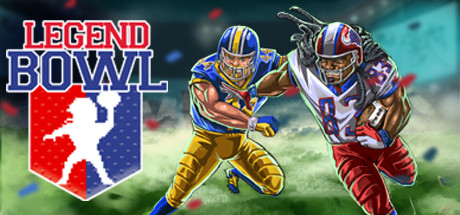

Hello! I like to code and sometime I write stuff too.
Most Recent ExCollege Class Post (10/04)

Legend Bowl
For this week’s blog post, I would like to continue the trend of
highlighting indie developers who were able to create a game by
themselves. This week the game of focus is “Legend Bowl.” Released
in 2020, Legend Bowl is an 8-bit and 16-bit throwback simulation-style
football game. The game was developed by King Javo under his game
development company Super Pixel Games.
Legend Bowl was inspired by many of the classic 2D football games
including Tecmo Bowl, and Sensible Soccer but with a more modern
gameplay. Many of the features of the game are realistic – the
movement and control of the players, the dimensions of the field,
the ¾ perspective broadcast angle, and even the weather, but the
game manages to retain a throwback feel to it through the 70s
style arcade graphics.
King Javo released his game at the right time. Although not a replica,
the game gives the ability for people to play a simulation football
game, which includes a franchise mode, a career mode, and stat
keeping across each season you play, with the uniqueness and
creativity of an indie game. King Javo has been deploying updates
and making improvements to the game since its initial release over
a year ago.
Legend Bowl has been released in the era when Madden NFL has a
monopoly over the football video game industry. Madden retains the
rights to all NFL content in the gaming world, and very few
competitors have managed to disrupt Madden’s control over football
games in general. I would not say “Legend Bowl” is a direct
competitor with Madden because of its drastically different graphics
and feel, but it has the potential to carve out a niche in the
intersection of video game/sports. Looking at IGN and user reviews
over the last few years, Madden ratings have been dropping due to EA’s
inability to introduce any creativity or novelty into the game.
Many fans of Madden complain about the lack of distinction between
games, and how each game feels like a carbon copy of the last one,
just with updated rosters. This is where Legend Bowl can accel.
Although the rollout of new modes and features will be slow due to
it being a one-man-team, King Javo has the opportunity to implement
novel features that fans have been asking for and to improve the game
over time.
I’m rooting for King Javo and for Legend Bowl to become a
big success. If you’re interested in the game at all, go check out
their steam page here:
https://store.steampowered.com/app/1106340/Legend_Bowl/